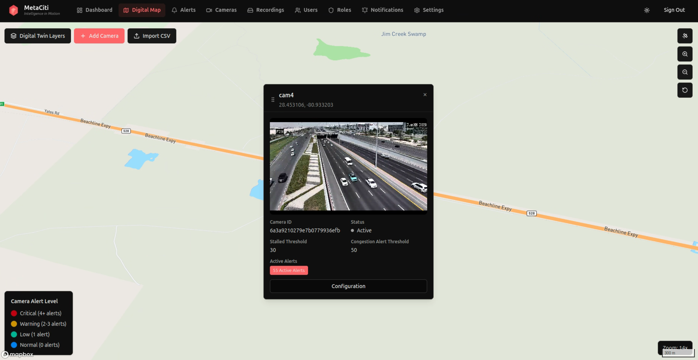
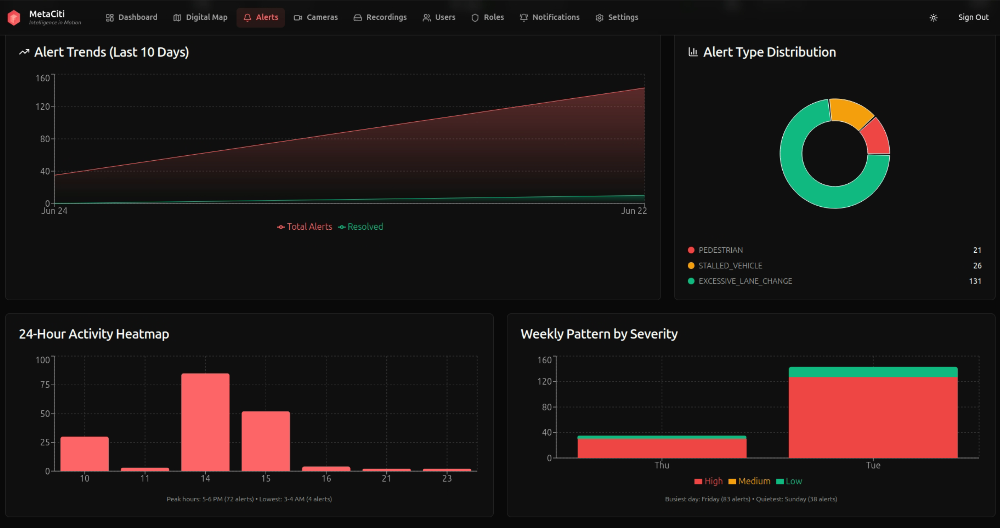
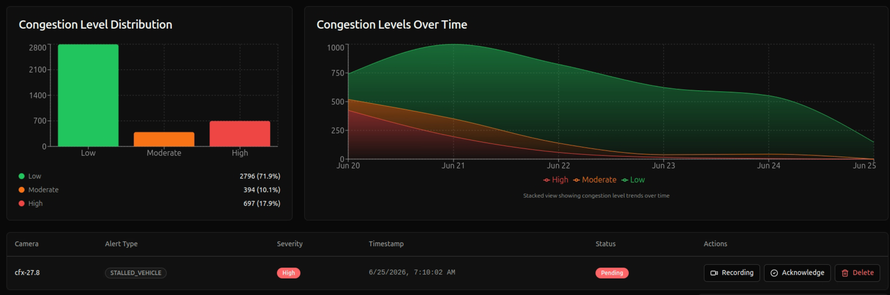
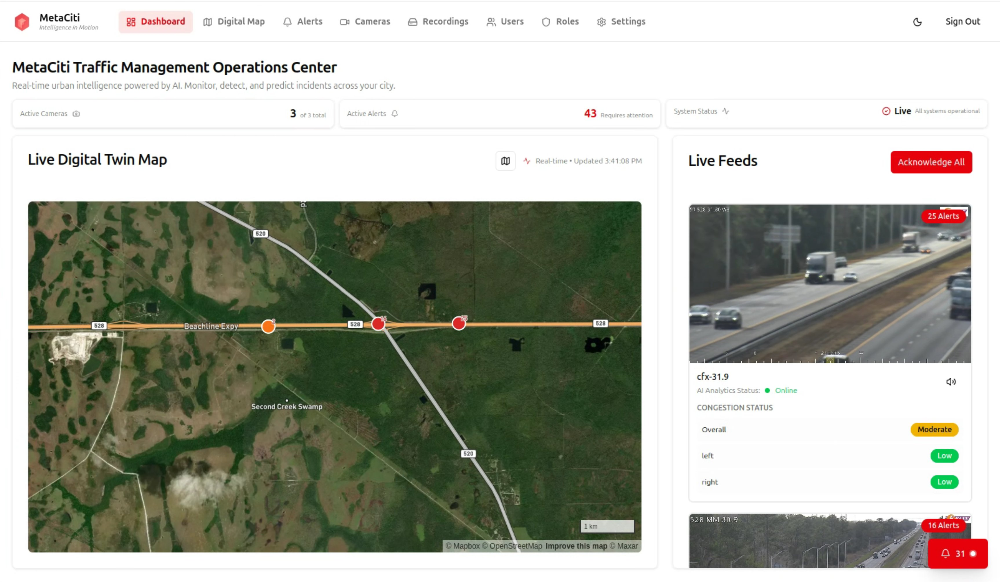

Deployed at international border crossings, toll expressway networks, and national highway programs — MetaCiti AI delivers incident detection, wait time prediction, and live congestion intelligence using your existing cameras.
MetaCiti plots your road network on real satellite maps. Camera nodes pulse with live alert status — red for critical, orange for warning. Click any camera to pull up its live feed, detection counts, and congestion thresholds instantly.

Actively deployed across three distinct high-stakes operational contexts spanning North America and the Middle East.
From first detection to operator action — the full intelligence stack, running at the edge.
MetaCiti captures every detection event, building a continuous record of network behavior — alert trends, congestion distributions, hourly activity patterns, camera performance, and weekly severity profiles.


MetaCiti serves agencies and operators across the full transportation network — from city streets to national corridors.
Currently active deployments
MetaCiti runs as a camera-native AI agent — continuously watching your network, tracking and detecting incidents, and alerting operators in real time.
MetaCiti is engineered for fast deployment on existing infrastructure. No construction. No camera replacement.
We run a focused technical demo using a sample of your existing camera feeds. No commitment. Typically 45 minutes.
